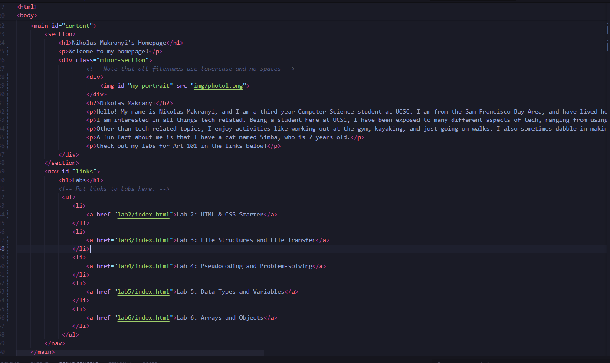
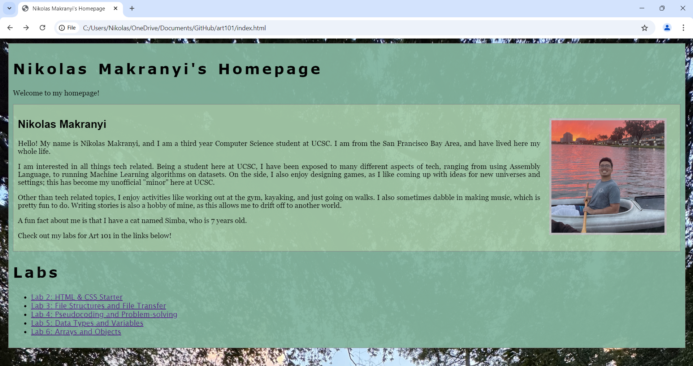
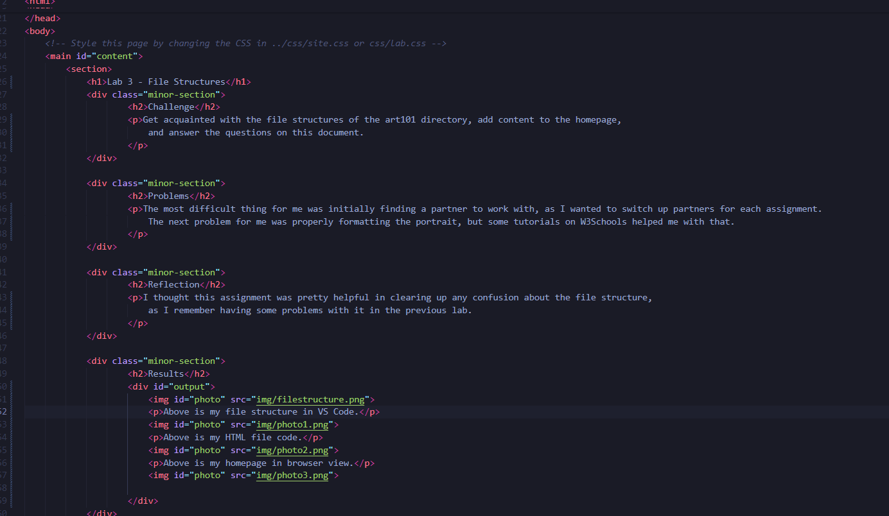
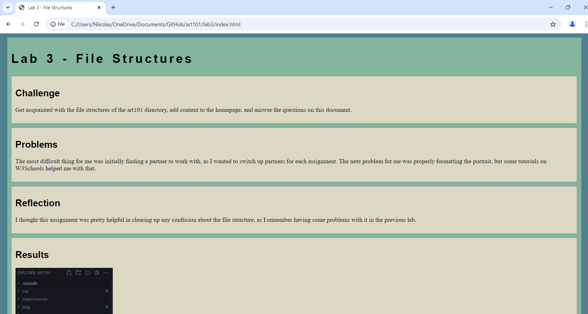
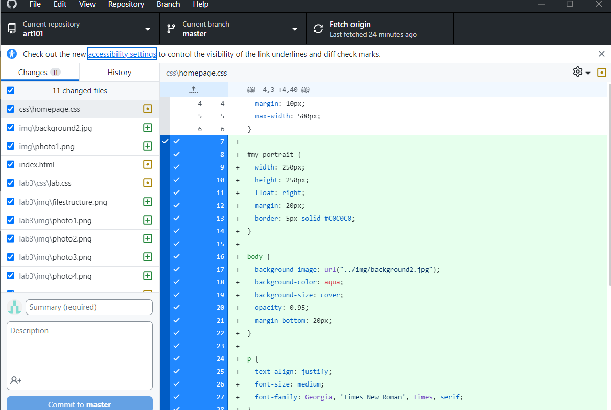
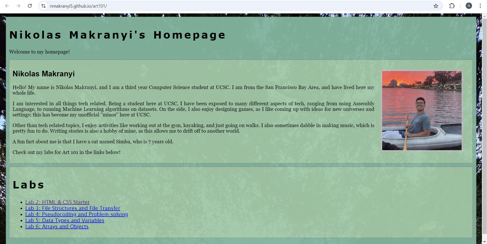

Lab 3 - File Structures
Challenge
Get acquainted with the file structures of the art101 directory, add content to the homepage, and answer the questions on this document.
Problems
The most difficult thing for me was initially finding a partner to work with, as I wanted to switch up partners for each assignment. The next problem for me was properly formatting the portrait, but some tutorials on W3Schools helped me with that.
Reflection
I thought this assignment was pretty helpful in clearing up any confusion about the file structure, as I remember having some problems with it in the previous lab.
Results
Above is my file structure in VS Code.
Above is my HTML file code for my homepage.
Above is my homepage in browser view.
Above is my HTML file code for lab 3.
Above is my lab 3 site in browser view.
Above are my files on the GitHub server.
Above is my homepage live on GitHub Pages.